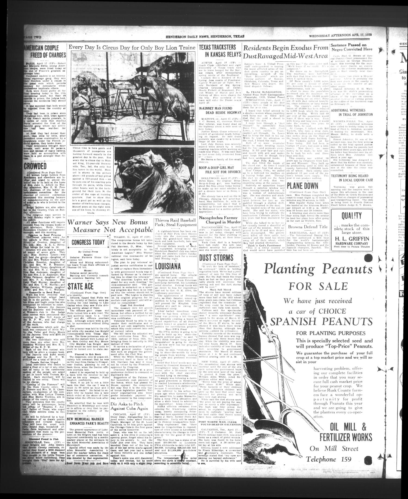
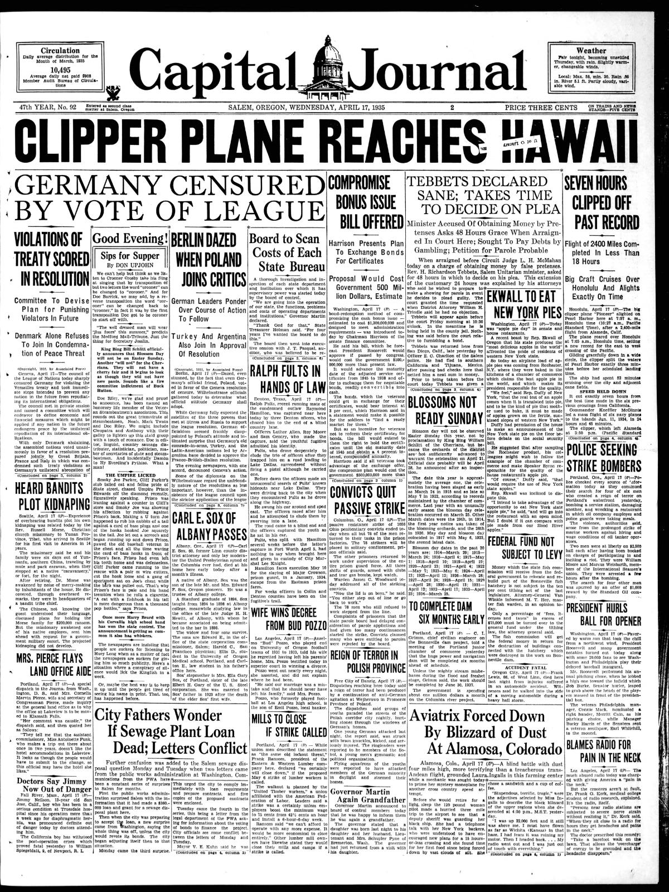

HN HN-494 · April 17, 1935 · Disasters, Accidents & Emergencies > Hurricanes, Tornadoes, Dust & Severe Storms > Dust storms and soil erosion emergencies
Source: Indianapolis Times, p. 22 — original page; National Weather Service Dust Bowl history.
Report: In an eyewitness feature, a correspondent wrote of trying and failing to outrun dust clouds across the Plains and described ranchers and farmers fleeing conditions they could no longer withstand.
Assessment: This is valuable on-the-ground testimony, published after the April 14 “Black Sunday†storm, but it should not be assumed that every scene narrated happened on April 14. The observations illustrate the prolonged disaster described in
Authentic scans retrieved from The Portal to Texas History (University of North Texas) and Historic Oregon Newspapers (University of Oregon). Article crops are located using the archive's own OCR word coordinates and rendered at native crop resolution; page scans are reduced-size access renditions. No images were generated, mocked, or retouched.


Not yet acquired. Queued for provider-specific acquisition testing (see source-acquisition manifest).
URL (preserved verbatim): https://newspapers.library.in.gov/?a=d&d=IPT19350417.1.22
Saved research report: Historical_Newspaper_Event_Research_478-502_2026-10-23.md
Evidence note: A newspaper report means a historical publication made a claim; it does not establish that claim as fact. Contemporary reporting is separated from later scholarly context and our own assessment.